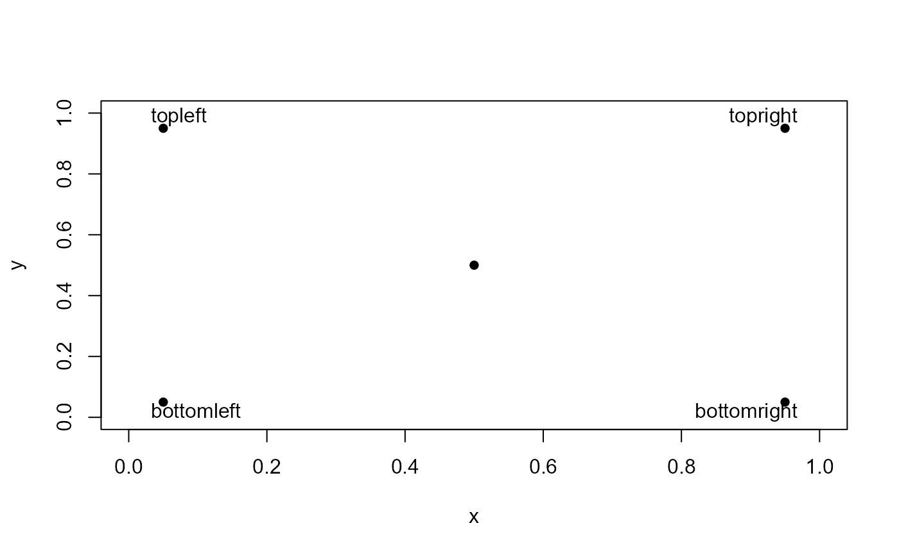

text_usr() draws the strings given in the vector labels at the coordinates given by x and y,
but using normalized device coordinates (0, 1) to position text at absolute locations in a plot.
This is useful when you know where in a plot you want to add some text annotation, but don't want to figure
out what the data coordinates are.
Arguments
- x, y
numeric vectors of coordinates in (0, 1) where the text
labelsshould be written. If the length ofxandydiffers, the shorter one is recycled. Alternatively, a single argumentxcan be provided.- labels
a character vector or
expressionspecifying the text to be written- ...
other arguments passed to
text, such aspos,cex,col, ...
Details
y may be missing since xy.coords is used for construction of the coordinates.
The function also works with par(xlog) == TRUE and par(ylog) == TRUE when either of these is set
for log scales.
Examples
library(heplots)
x = c(0.5, rep(c(0.05, 0.95), 2))
y = c(0.5, rep(c(0.05, 0.95), each=2))
plot(x, y, pch = 16,
xlim = c(0,1),
ylim = c(0,1))

text_usr(0.05, 0.95, "topleft", pos = 4)
#> Error in text_usr(0.05, 0.95, "topleft", pos = 4): could not find function "text_usr"
text_usr(0.95, 0.95, "topright", pos = 2)
#> Error in text_usr(0.95, 0.95, "topright", pos = 2): could not find function "text_usr"
text_usr(0.05, 0.05, "bottomleft", pos = 4)
#> Error in text_usr(0.05, 0.05, "bottomleft", pos = 4): could not find function "text_usr"
text_usr(0.95, 0.05, "bottomright",pos = 2)
#> Error in text_usr(0.95, 0.05, "bottomright", pos = 2): could not find function "text_usr"